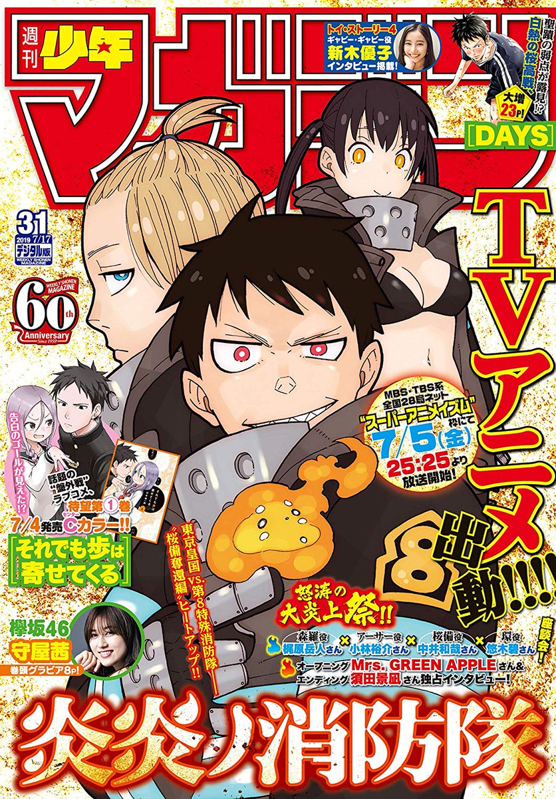
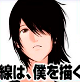
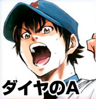
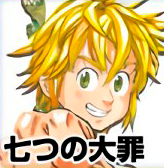
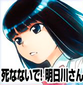
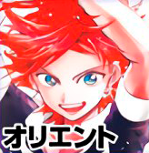
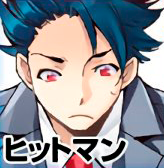
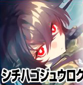

Los puestos y comentarios de los autores de la Weekly Shonen Magazine de esta semana.

Sen wa boku wo Egaku

Los cortauñas recien comprados son muy severos cuando los usas.
Diamond no Ace act II

Me gustaría ver las semifinales de Tokyo 2020 en el Tokyo Dome.
Domestic Girlfriend
El otro día fui a ver la retransmisión de radio de las tres hijas venenosas. mamu-chan era muy tímida.
Seitokai Yakuindomo

He empezado a trabajar en el próximo volumen.
The Seven Deadly Sins

Parece ser que las opiniones del nuevo juego para smartphones "Seven deadly sins: Light & Dark battles" son grandiosas. La resolución del juego es super alta, se ve genial!
Shinanaide Azukawa-san

He impresionado a una persona con mi guitarra pero no he podido practicar con ella... lo siento.
Orient

Estoy aprendiendo a hacer comida a fuego lento.
Days

Cumpli 39 años el otro día.
Kanojo, Okarishimasu

En el Torneo de Shogi de Abema, la septima planta de Sasaki fue destruida por la mano del rey el la Torre de Tokyo.
Runway de Waratte
Vamos a estar a finales de Junio en casi nada.
Go-Toubun no Hanayome

Me ha dado un resfriado de verano, por lo que estoy repitiendo mi rutina de solo trabajar y dormir.
Tokyo Revengers

Eh? Llegaremos a los 13 volúmenes? Quien sabe que pasará después de llegar a los 12 volumenes.
Blue Lock

Ya viene! En verano suelo ir a la casa de la playa o a la T-house! Obviamente tienes que ir con tu bañador. Esta en el barrio de Kami-ikebukuro, en Toshima!
Senryuu Girl
La adaptación al anime fue buena, fue muy divertido.
Fire Force
La fecha de estreno de "Borderlands 3" ha sido decidida y estoy muy emocionado! También hay otro juego de "The legend of Zelda" que va a salir! Y "Elden Ring" se ve prometedor! Estoy esperando a todos!
Hitman

Watanabe Shizue se enfadó mucho cuando dije que estaba escribiendo en un portátil barato.
Boarding School Juliet

Estoy viendo "Zotopia" y me gustaría mucho vivir allí.
Soredemo Ayumu wa Yosetekuru

Estoy conteto porque parece ser que han abierto un nuevo restaurante de barbacoa cerca de aquí.
Gamblers Parade

Me gusto mucho HAIKARA NYUSU del disco de "Tentakuruzu" de Splatoon, también me gusto la función de omitir y la batalla del boss final, y como esos 2 personajes se mantuvieron juntos. Y por último, muchas gracias!
Danshi Kokosei wo Yashinaitai

Quiero ver "Godzilla".
Shichiha Gojuroku

Durante la serializacion estuve pensando: "Esta es la cima de mi vida", y fue muy divertido, muchas gracias, nos vemos pronto!
Fumetsu no Anata e

Tuve un sueño en el que mis encías fueron a puñaladas, me dio miedo.
Mako-san wa Shindemo Jiritsu Shinai
Me gusta dibujar ropa de baño pero sigo odiando el calor del verano.
Edens Zero
Hiro Mashima
Gracias a todos vosotros hemos sido capaces de celebrar el primer aniversario. Seguiremos esperando vuestro apoyo!